Panorama du traitement des boues urbaines
La boue est le principal déchet issu du traitement des eaux usées. Aborder une problématique liée aux boues implique de se confronter à une matière complexe dont l'élimination est réglementée et normée.
La boue présente des caractéristiques qui nécessitent qu'elle soit traitée à bon escient et que les voies de valorisation envisageables soient étudiées avec minutie. En fonction de leurs compositions, leurs exutoires seront adaptés car bien que représentant un intérêt quant aux nutriments qu'elles apportent aux surfaces agricoles, elles sont aussi une source de pollution des sols.
Les boues sont aussi une matière fermentescible source d'énergie valorisable. Dans tous les cas, la réduction des volumes de boue et les coûts associés sont un enjeu majeur qui implique de considérer de nombreuses technologies dont des technologies thermiques fonctionnant à haute pression et à haute température.
1.1 Qu'est-ce que la matrice boue ?
La boue est un ensemble de particules en suspension dans une matrice liquide. Le terme désigne à la fois la matière particulaire contenue dans l'eau ainsi que la matière particulaire générée par la croissance bactérienne issue des procédés de traitement des eaux usées.
La matrice d'une boue est complexe à décrire. Un floc de boue est composé :
- De matière organique inerte telle que des substances polymériques extracellulaires (EPS) ou bien des fibres,
- D'agents pathogènes (bactéries filamenteuses, virus, parasites),
- De microcolonies,
- De particules inorganiques, telles que des cristaux, du microsable ou des particules métalliques.

Les substances polymériques extracellulaires [EPS] sont des biopolymères naturellement produits par des microorganismes et nécessaires à leur survie. Ces EPS assurent la formation et la cohésion des flocs de boue.
Les agents pathogènes sont classés en trois catégories :
- Des virus : entérovirus, hépatovirus, rotavirus, réovirus, astrovirus, coronavirus, etc.
- Des parasites : protozoaires, métazoaires (œufs d'helminthe, œufs de ténia).
- Des bactéries : Escherichia coli, listeria, salmonelle, Clostridium perfringens, entérocoques, etc.
Des contaminants chimiques de deux catégories sont aussi présents :
- Les métaux lourds (ETM) : cuivre, zinc, plomb, cadmium, chrome, nickel, mercure, sélénium.
- Des composés traces organiques : hydrocarbures polycycliques aromatiques (HPA), polychlorobiphényles (PCB) et dioxines.
1.2 D'où proviennent les boues ?
Qu'elles soient d'origine urbaine, agricole ou industrielle, les eaux usées doivent être traitées afin de réduire leur niveau de pollution. Ces eaux sont collectées et envoyées vers des stations d'épuration où des procédés biologiques vont abattre la pollution. Les éléments à traiter ainsi que leurs limites sont imposés par la directive 91/271/EEC selon cinq indicateurs :
- La demande chimique en oxygène [DCO]
- La demande biochimique en oxygène [DBO]
- Le total des matières solides en suspension [MES]
- La concentration en phosphore total [PT]
- La concentration en azote total [NGKT]
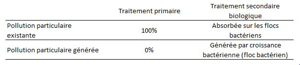
Lors du traitement de l'eau résiduaire, on transfère une pollution en phase liquide en une phase gazeuse (CO₂, N₂, H₂S, composés odorants) et on génère une phase concentrée : les boues. Le tableau ci-dessous récapitule les principales technologies de traitement biologique :
| Technologie | Carbone | Azote | Phosphore |
|---|---|---|---|
| Boue activée sans décanteur primaire | ✓ | — | — |
| Boue activée + décanteur primaire | ✓ | ✓ | — |
| MBBR boue activée hybride | ✓ | ✓ | ✓ |
| (M)SBR | ✓ | ✓ | ✓ |
| Biofiltre avec décanteur primaire | ✓ | ✓ | ✓ |
| MBR | ✓ | ✓ | ✓ |
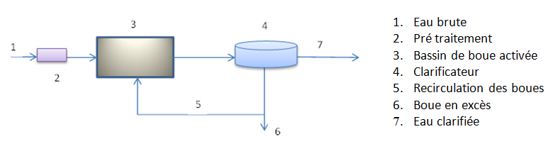
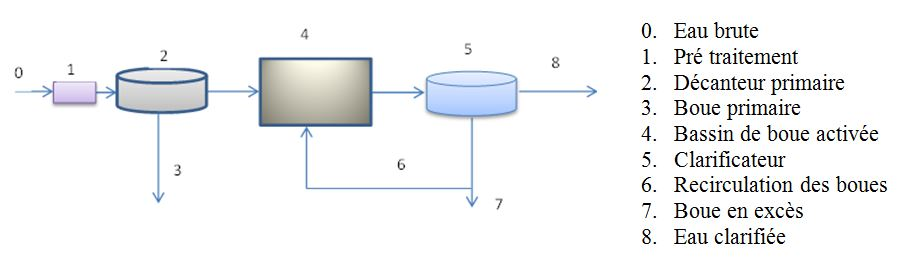
Le tableau suivant présente la répartition des technologies sur les 140 plus grosses usines opérées par VEOLIA dans le monde en 2014 :
| Technologie | Nombre de sites | Millions d'EH traités |
|---|---|---|
| Boue Activée faible charge sans primaire | 36 | 7,43 |
| Boue Activée faible charge avec primaire | 54 | 28,41 |
| Boue Activée forte charge sans primaire | 9 | 4,27 |
| Boue Activée forte charge avec primaire | 17 | 7,52 |
| Biofiltres | 24 | 6,34 |
| Total | 140 | 53,97 |
| Sites boues activées | 116 (83 %) | 47,63 (88 %) |
1.3 Réglementation et voies de valorisation
1.3.1 L'épandage agricole
Les textes réglementaires relatifs à l'épandage des boues visent à encourager un développement contrôlé de cet épandage agricole en évitant tout préjudice pour la santé humaine et le milieu naturel. La France s'est dotée d'un dispositif réglementaire strict via le Décret du 8 décembre 1997 et l'arrêté du 8 janvier 1998, plus contraignants que les normes européennes de la directive 86/278/EEC.
Les teneurs en métaux (cadmium, chrome, cuivre, mercure, nickel, plomb, zinc) sont analysées dans les boues et dans les sols avant tout épandage. Pour le mercure, la teneur limite est de 10 mg/kg de matière sèche dans les boues et de 1 mg/kg de matière sèche dans les sols.
La production annuelle de boues est passée de 1 125 000 tonnes de matière sèche (tMS) en 2007 dont 70 % valorisées en agriculture, à 1 500 000 tMS avec seulement 42,8 % valorisées en agriculture. Les surfaces d'épandage se raréfient, notamment aux abords des zones à forte densité de population.

1.3.2 L'incinération et le séchage
L'incinération permet de réduire les boues à leurs cendres. C'est un procédé complexe, énergivore et difficile à implanter socialement. Le séchage thermique, autre alternative, présente des nuisances olfactives importantes qui le rendent également difficile à accepter socialement.
1.3.3 La digestion anaérobie
La digestion anaérobie est le traitement le plus répandu pour réduire les volumes de boue tout en produisant du biogaz. Elle présente cependant des performances de réduction du volume de boue limitées. Pour optimiser ses performances, des procédés dits d'hydrolyse thermique peuvent être implantés en amont du digesteur.
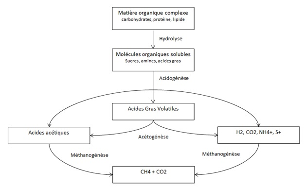

1.4 Les procédés d'hydrolyse thermique
L'hydrolyse thermique consiste à traiter les boues à haute température (155–170 °C) et haute pression (6–10 bar) pendant un temps de séjour défini (20–30 minutes). Ce traitement permet de :
- Casser les flocs de boue et les membranes cellulaires des bactéries,
- Solubiliser la matière organique particulaire (augmentation de la DCO soluble),
- Améliorer la biodégradabilité de la boue dans le digesteur,
- Hygiéniser les boues en éliminant les éléments pathogènes,
- Améliorer la déshydratabilité des boues digérées.
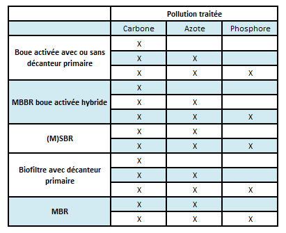
1.4.1 Le procédé CAMBI
Le procédé CAMBI est le pionnier de l'hydrolyse thermique à grande échelle. Il fonctionne par bâchées avec un pulpeur, un flash tank et deux à quatre réacteurs en parallèle. Les conditions opératoires sont : 165 °C / 8 bar, avec un temps de réaction d'environ 30 minutes. Un cycle complet dure de 60 à 72 minutes.

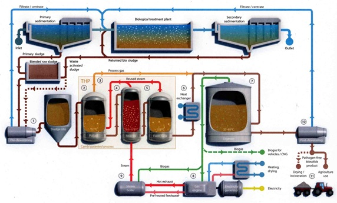
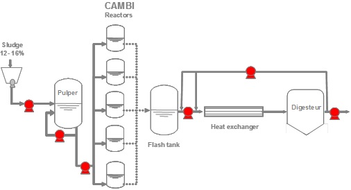
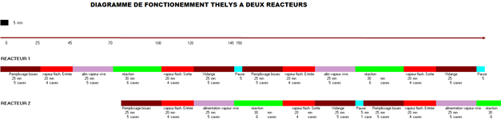
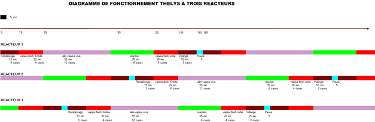
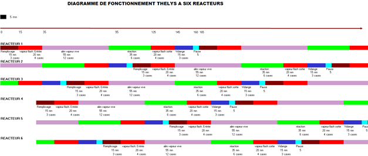
1.4.2 Le procédé BioThelys
Le procédé BioThelys (Veolia) fonctionne également par bâchées. Contrairement au procédé CAMBI, il n'a pas de pulpeur et utilise l'un de ses réacteurs pour recevoir la vapeur de flash. Les cycles sont plus complexes (150 à 165 minutes) car les réacteurs doivent fonctionner en quinconce.
Les six étapes d'un cycle BioThelys sont :
- Remplissage — Le réacteur reçoit la boue brute déshydratée (14–16 % de matière sèche).
- Préchauffage — La boue est préchauffée à ~80 °C avec la vapeur flash d'un autre réacteur.
- Chauffage — Injection de vapeur vive (190 °C / 12 bar) pour atteindre 165 °C / 8 bar.
- Réaction — Maintien des conditions pendant 30 minutes.
- Décompression — Le réacteur cède sa vapeur de revaporisation à un autre réacteur.
- Vidange — Le réacteur est progressivement vidangé grâce à la pression résiduelle.
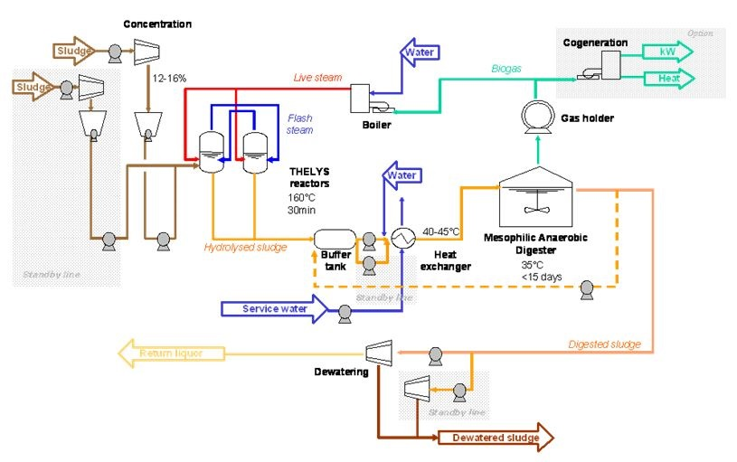
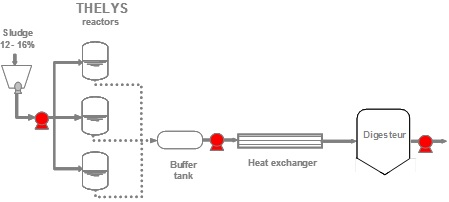

1.4.3 Le procédé Bippita (thermoalcalin)
Ce procédé japonais combine un traitement thermique (200 °C / 20 bar) avec un traitement chimique à la soude caustique (NaOH) à pH 13–13,5. L'ajout de NaOH augmente la solubilisation de la matière organique de 70 à 80 % par rapport à une hydrolyse thermique seule. Cependant, la neutralisation finale avec de l'acide sulfurique et la faible concentration des boues traitées pénalisent la consommation énergétique.
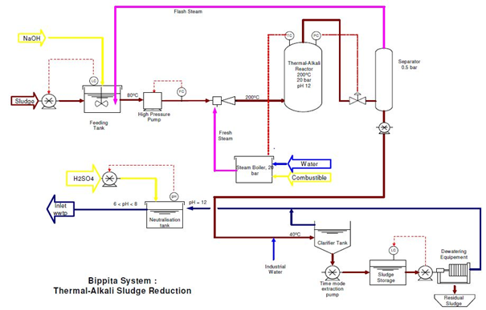

1.4.4 Comparaison des tailles de réacteurs
Pour un même volume traité, les réacteurs CAMBI sont plus petits que ceux du BioThelys, en raison de :
- Des cycles plus courts (60–72 min contre 150–165 min),
- Un flash tank dédié permettant une gestion indépendante de la vapeur de revaporisation,
- Un taux de remplissage de 85–90 % contre 60 % pour le BioThelys.
Un procédé continu permettrait de présenter un volume de réacteurs comparable au CAMBI tout en éliminant les contraintes de gestion des cycles.
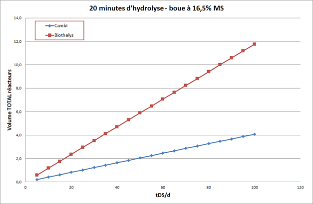

Conclusion du chapitre 1
Le devenir des boues issues des stations d'épuration représente un enjeu environnemental majeur. Avec le développement des stations de traitement d'eau, le volume de boues croît alors qu'en parallèle les règlements environnementaux se durcissent et les zones d'épandage se réduisent.
Les procédés d'hydrolyse thermique existants fonctionnent par bâchées, ce qui rend leur gestion délicate. Le développement d'une hydrolyse thermique fonctionnant en continu trouve tout son sens dans la mesure où une telle technologie permettrait de pallier aux contraintes des procédés par bâchées existants.